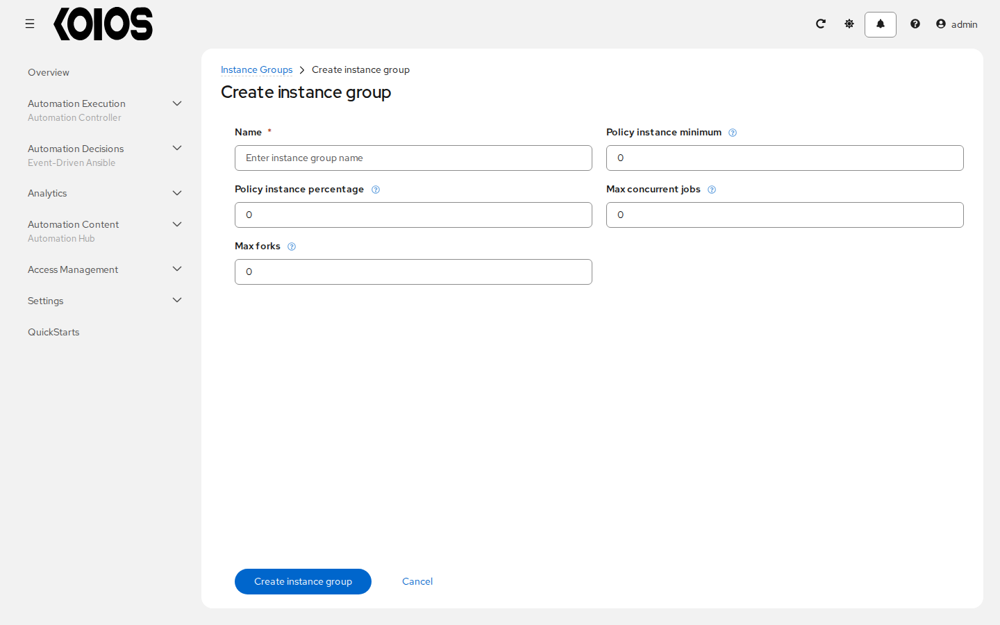
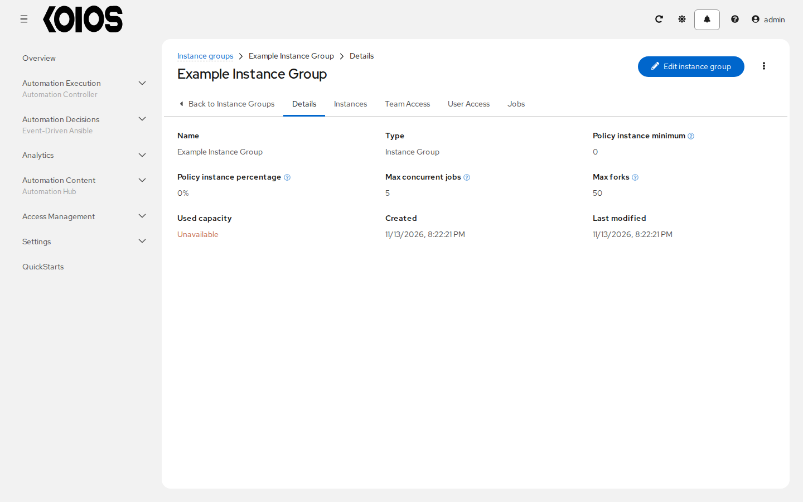
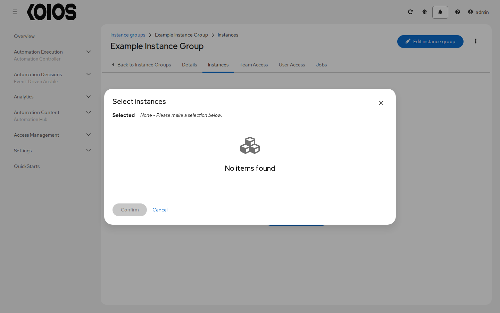
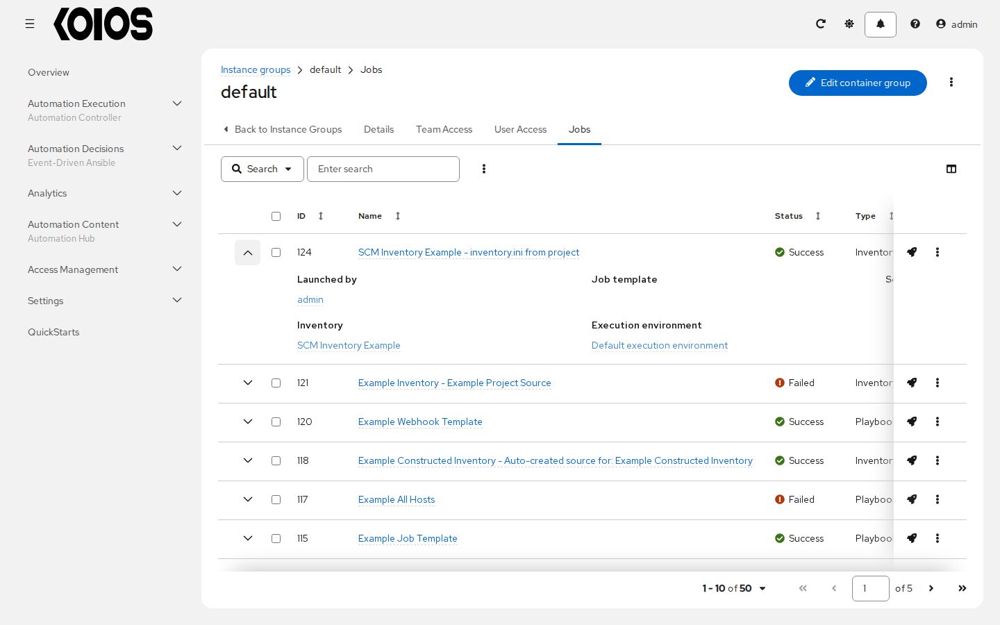

23. Instance Groups
An Instance Group groups the instances that run jobs; its policies decide which instances belong to it and how many jobs it runs at the same time. Open Automation Execution > Infrastructure > Instance Groups to see the instance groups and container groups, with their type, their instances and their used capacity:

In Koios Automation Platform on OpenShift or Kubernetes, the controlplane instance group holds the control nodes of automation controller, and the default group is a container group: jobs run in pods of the cluster, not on the control nodes. A regular instance group runs jobs only on the execution nodes (or hybrid nodes) associated with it; see Managing Capacity With Instances to add execution nodes. For more information about the policies and capacity of instance groups, see Instance Groups; for container groups, see Container Groups.
23.1. Create an instance group
To create a new instance group:
Open Automation Execution > Infrastructure > Instance Groups.
Click Create group and select Create instance group.

Enter the appropriate details into the following fields:
Name (required). Names must be unique. The
defaultandcontrolplanegroups cannot be renamed.Policy instance minimum. The minimum number of instances to automatically assign to this group when new instances come online.
Policy instance percentage. The minimum percentage of instances to automatically assign to this group when new instances come online.
Max concurrent jobs. The maximum number of jobs that can run at the same time on this instance group.
Max forks. The maximum number of forks that the jobs running on this instance group can use in total.
Note
All these fields except Name default to 0. For Max concurrent jobs and Max forks, 0 means no limit. See Instance group capacity limits for more detail.
Click Create instance group.
The Details tab of the new instance group opens; click Edit instance group to change it. The Instances tab lists its instances, Team Access and User Access control who can use it, and Jobs lists the jobs that ran on it.

23.1.1. Associate instances to an instance group
To associate instances to an instance group:
Open the Instances tab of the instance group and click Associate instance.
Select one or more instances in the Select instances window and click Confirm. Only execution and hybrid nodes that are not in the group yet are offered; control and hop nodes cannot be associated, so in a platform without execution nodes the list is empty, as in this example.

The Instances tab shows each instance with its status, node type, capacity and used capacity. From this view you can adjust the capacity of an instance with its slider, enable or disable it with its switch, run a health check of execution nodes, and disassociate execution nodes from the group. Control and hop nodes cannot change their instance group membership, and hybrid nodes cannot leave controlplane, so those actions are disabled for the control node of this example:

23.1.2. View jobs associated with an instance group
To view the jobs that ran on the instance group, open its Jobs tab. Expand a job to see more details about it.

Each job displays its ID, name, status and type, and, expanded, who launched it and the resources it used, such as the template, inventory, project and execution environment.
The instances are run in accordance with instance group policies. Refer to Instance Group Policies.